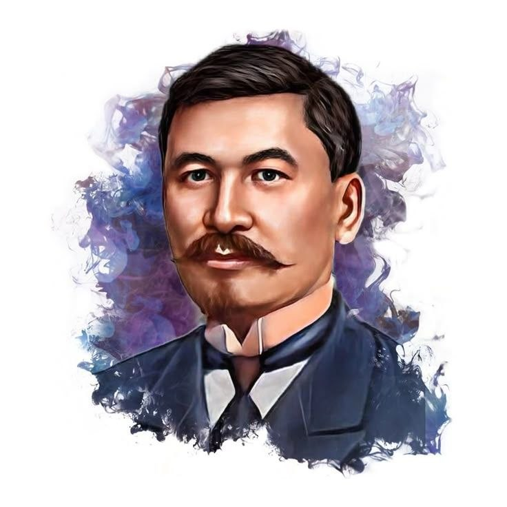
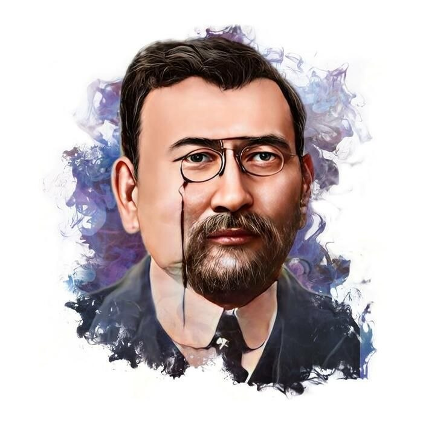
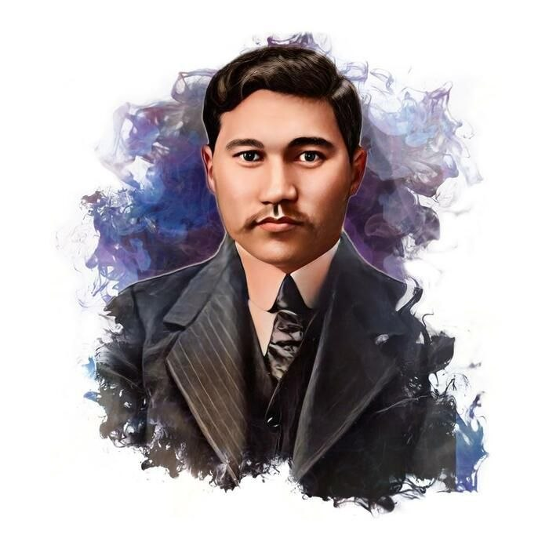
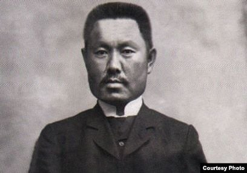
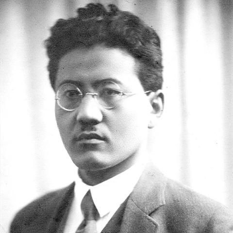
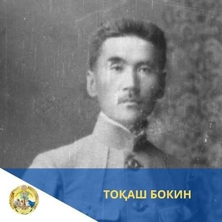
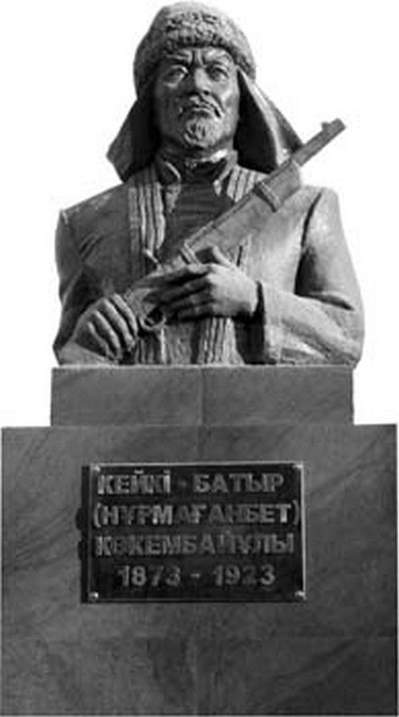
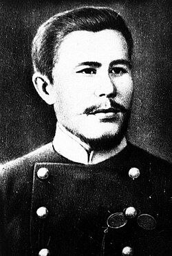
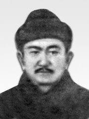
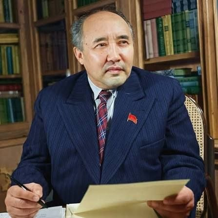

Әлихан Бөкейханов
Алаш қозғалысының көсемі, «Алаш» партиясы және Алашорда үкіметінің төрағасы, публицист, ғалым.
Қазақ халқының мүддесін қорғап, патша үкіметі мен Кеңес билігіне қарсы саяси-экономикалық еңбектер жазды, «Қазақ» газетінің негізін қалады.

Ахмет Байтұрсынов
Ақын, тілші-ғалым, әдебиеттанушы, түркітанушы, қоғам қайраткері, ұлт ұстазы.
Қазақ тіл білімінің атасы, «Қазақ» газетінің редакторы, «Тіл-құрал» оқулықтарының авторы.

Міржақып Дулатов
Алаш қайраткері, ақын, жазушы, публицист.
1909 жылы жарық көрген «Оян, қазақ!» атты өлеңдер жинағы арқылы халықтың ұлттық санасын оятуға зор үлес қосты.

Мұхамеджан Тынышбаев
Тұңғыш қазақ теміржол-инженері, тарихшы, Алашорда үкіметінің мүшесі.
Қазақ халқының этногенезі мен тарихы туралы ғылыми еңбектер жазды, Түркістан автономиясының премьер-министрі болды.

Тұрар Рысқұлов
Көрнекті мемлекет және қоғам қайраткері, Коминтерн өкілі.
Түркістан Республикасы ОАК төрағасы қызметін атқарып, ашаршылық пен жер мәселесін шешуде, ұлт мүддесін қорғауда батыл қадамдар жасады.

Тоқаш Бокин
Жетісудағы ұлт-азаттық қозғалыстың және революциялық қозғалыстың белсенді қатысушысы, көтеріліс басшыларының бірі.
1916 жылғы ұлт-азаттық көтеріліс кезінде халық мүддесін қорғап, патша отаршылдығына қарсы күресті.

Кейкі батыр
1916 жылғы Торғай ұлт-азаттық көтерілісінің қолбасшыларының бірі, батыр.
Патша үкіметінің жазалаушы отрядтарына қарсы ерлікпен күресіп, халық арасында әділдікті қорғады.

Бақытжан Қаратаев
Заңгер, қоғам қайраткері, I Мемлекеттік Думаның депутаты.
Дума мінберінен қазақ халқының жер мәселесі мен құқықтарын қорғап, патшалық саясаттың әділетсіздігін өткір сынға алды.

Көлбай Тоғысов
Алаш қозғалысының қайраткері, публицист, «Алаш» партиясының бағдарламасын жасауға қатысушы.
Баспасөз беттерінде халық ағарту, әлеуметтік және саяси мәселелерді көтеріп, ұлттық мүдде жолында еңбек етті.

Мұхтар Әуезов
Көрнекті жазушы, драматург, ғалым, қоғам қайраткері.
Жастайынан «Алаш» идеяларымен сусындап, кейін қазақ әдебиеті мен өнерін әлемге танытқан біртуар тұлғаға айналды.